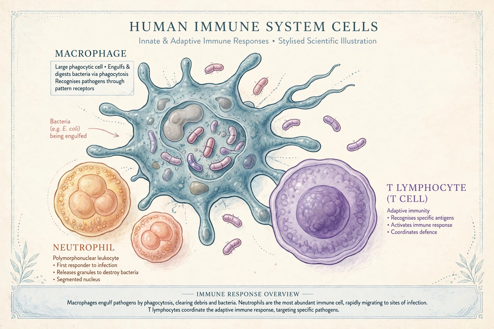

Immune system
From Wikipedia, the free encyclopedia

Immune cells (image regenerated from memory)
The immune system is a network of biological systems that protects an organism from disease — distinguishing self from pathogens such as bacteria, viruses, fungi and parasites, and from abnormal cells. It comprises physical barriers (skin, mucus), the innate immune system (immediate, generic defences including phagocytes and inflammation) and, in jawed vertebrates, the adaptive immune system (B cells making antibodies, and T cells, with long-lived immunological memory).
Vaccination works by training adaptive immunity without the risks of natural infection. Immune failures include immunodeficiency (e.g. AIDS), autoimmunity (the system attacking the body, as in type 1 diabetes) and allergies (overreaction to harmless substances). White blood cells, produced in bone marrow and matured in the thymus and lymphoid organs, are the system's agents; lymph nodes, spleen and tonsils are its meeting points where responses are organised.
See also
Vaccine · Virus · Bacteria · Antibody · HIV